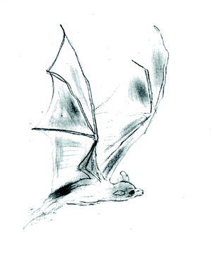

Now that we have installed a base system, the next three chapters will concentrate on
Please note when we talk of tightening the security we are referring to the features available within the base installed system and not to any new additional software. We will talk about that later in this book.
How to tighten the security of our configured system.
Optimise our sytem to perform at its peak.
Upgrade our machine for the latest kernel.